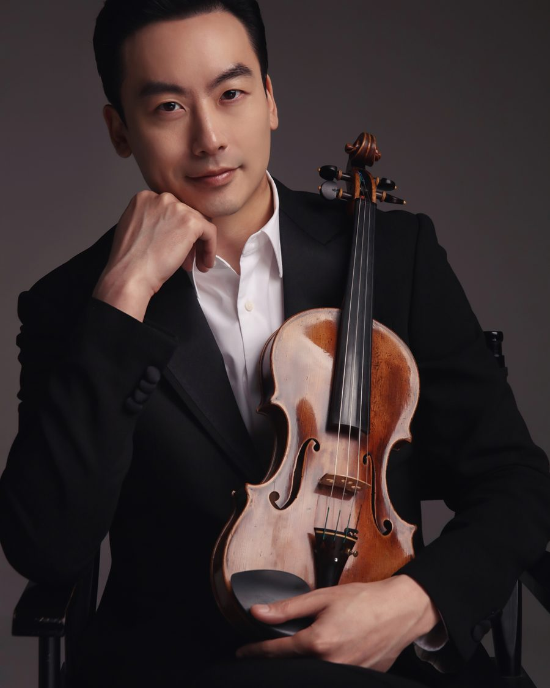

→ 단원 목록으로

바이올린
김남훈
악장 · 리더바이올린
주요 약력
- 예원학교 졸업, 서울예고 조기 졸업, 한국예술종합학교 영재입학, 예술사 및 독주자과정 졸업
- 맨해튼 음악대학 Master of Music 취득, Professional Study 이수, 럿거스 음악대학(Mason Gross School of the Arts) 음악박사 졸업
- 해외파견음협콩쿠르 1위, 이화경향 콩쿠르 1위, 중앙일보 콩쿠르 2위, 코리아필하모닉 콩쿠르 1위, 한국일보 콩쿠르 2위, 조선일보 콩쿠르 2위
- 서울심포니, 서울챔버, 원주시립교향악단, 프라임필하모닉 오케스트라 및 Plymouth Philharmonic Orchestra, MAV Symphony Orchestra, Georgia State University Symphony Orchestra 등 국내외 여러 오케스트라와 협연
- 예술의전당 IBK챔버홀 귀국독주회, 세종문화회관, 금호영아티스트, 통영국제음악재단 초청 독주회, 주미대사관 한국문화원 Petit Classical Concert, Carnegie Weill Hall 독주회, JSAC 초청 Gala Concert
- 화음챔버오케스트라, 부산문화회관 챔버페스티벌, 석조전 음악회, 트리오 ON 등 실내악 활동
- 현) 계명대학교 음악공연예술대학 관현악과 교수, 트리오 ON, 화음챔버오케스트라, 대구 비르투오조 챔버 리더, 뉴올드 앙상블, 앙상블 V9, 앙상블 The First 멤버